看完本教程，你将学会安装Geoserver，然后将shp图发布为WMS和WFS服务，在后续文章中，将讲到使用GeoServer发布PostGIS空间数据库中的数据，以及在Mapbox，Openlayers中如何调用WFS和WMS服务。
安装GeoServer
我安装的是GeoServer2.3.2版本（本教程与Geoserver的版本关系不大，下载最新版的也适用），百度云盘下载地址为http://pan.baidu.com/wap/shareview?&shareid=1723125584&uk=3759610434&dir=%2Ftableau%2F%E8%BD%AF%E4%BB%B6%E5%B7%A5%E5%85%B7&page=1&num=20&fsid=3075679503&third=0，最好按照默认目录安装，一步一步Next，其中默认帐号如下图所示
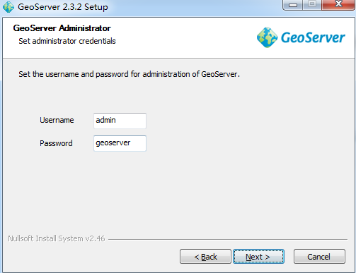
使用GeoServer上传数据
（1）打开开始菜单，找到GeoServer的目录，打开GeoServer Data Directory，如下图所示，该目录使用来保存GeoServer中用来发布的数据。
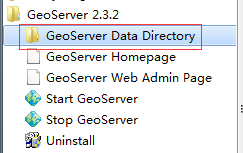
（2）打开该目录（GeoServer 2.3.2\data_dir）后，进入data目录，新建一个文件夹myTestData，用来保存你将来要发布为WMS和WFS的数据，将数据存放在该目录中，如下图所示。
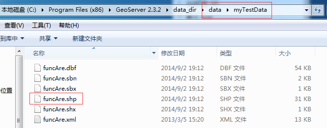
（3）打开开始菜单，找到GeoServer的目录【与（1）相同】，打开Start GeoServer，等待服务打开之后，再打开GeoServer的目录中的GeoServer Web Admin Page，网址为：http://localhost:8080/geoserver/web（若该页面无法访问，说明没有打开服务，需重新打开Start GeoServer），在右上角登陆，帐号密码与安装GeoServer时设置的相同，我使用的是默认，如下图所示。
进入GeoServer页面之后，在左上角选择Workspaces来建立新的工作区，然后选择Add new workspace
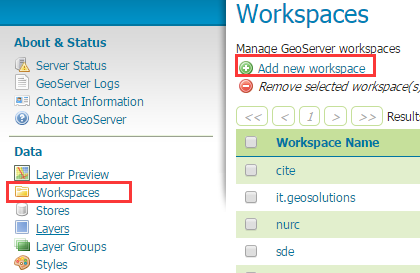
在name中填写你的工作区名称，命名空间填写http://www.cxzx.com(测试用可以随便写一个)，该URI在发布WFS时要用到，如下图所示。
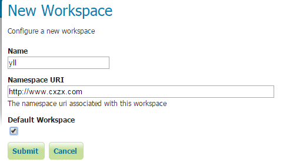
选择界面左上角的stores，然后选择Add new Store，添加数据。如下图所示。
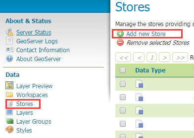
在New Data Sourse中，选择第一项 Directory of spatial files (shapefiles)，如下图所示 ，本文主要将简单的发布shp数据，后续文章会将将shp数据存储到PostGIS空间数据库中，然后使用GeoServer将PostGIS中的空间数据发布为WMS/WFS数据。
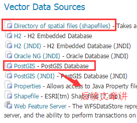
在New Vector Data Source页面对表单进行如下设置，点击Save保存。
Sava保存之后，会出现New Layer页面，这里面有你刚才保存在目录中的所有数据，由于我只保存了一个shp文件，所以只有一个Layer，如下图所示。
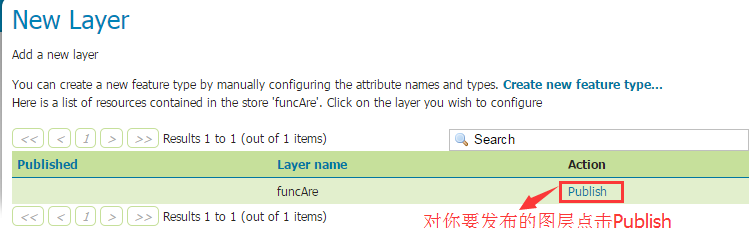
使用GeoServer发布数据为WMS和WFS
在刚才的New Layer页面中，对你要发布的数据，点击该数据最右边的Publish，在Data标签页中按照下图进行设置，顺序很重要，其他不用改。改好之后，在最下面点击Save就发布成功。
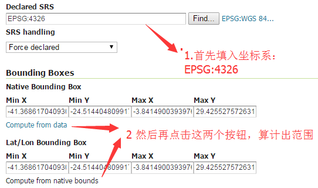
那么如何查看你发布的数据，在页面右上角点Layer Preview就出现所有发布的图层。
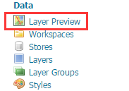
在Layer Preview里面可以找到你刚才发布的数据，如下图所示。
点击OpenLayers可以查看你刚才发布的数据，点击KML可以将你刚才发布的数据生成KML文件，点击GML可以将你刚才发布的数据生成GML文件。
下图如OpenLayers的效果
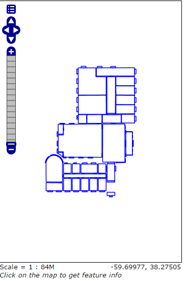
点击Select One可以选择你需要的各种地图服务，如下图所示
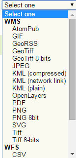
选择WMS——PNG即可发布为WMS服务，选择WFS——GML2即可发布为WFS服务，当然，你选择其它的格式也完全可以。以WMS——PNG为例来说明，如下图所示，其中浏览器的地址栏中字符串就是你的WMS服务（当然WFS也一样）：
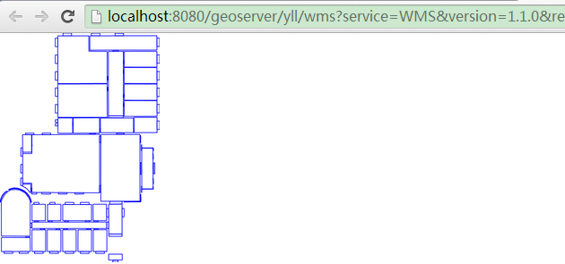
下图为WFS——GML2的数据效果
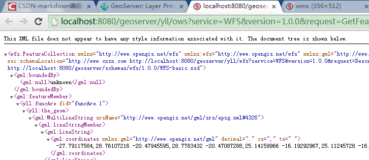
如果需要将局域网中访问刚才发布的WMS和WFS服务，只要将地址中的localhost改为你的IP地址即可。
后续文章将讲解WMS和WFS的基本操作和函数，以及如何在Mapbox、Openlayers中调用WMS服务和WFS服务。